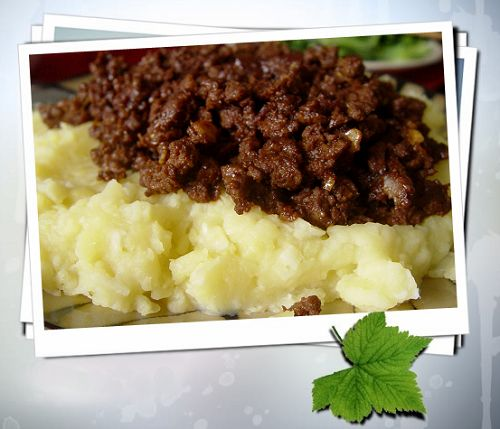

生活是极不愉快的玩笑。 @ Sep 07, 2008
买衣服的时候有多快乐，整理起来就有多痛苦。
每一种生活都各有利弊得失。
...... ......


星期五惊喜地发现...南京的天空竟然是蓝色的！


生理上到了用眼霜的年纪，心理却还惆怅在青春期？
即使明天80岁，我还是要种我心中的苹果树。

把脸面对阳光，你将见不到阴影。
快乐是勇敢的一种形式，Luke，不要因为我要去上班了而不快乐。

买衣服的时候有多快乐，整理起来就有多痛苦。
每一种生活都各有利弊得失。
...... ......
星期五惊喜地发现...南京的天空竟然是蓝色的！
生理上到了用眼霜的年纪，心理却还惆怅在青春期？
即使明天80岁，我还是要种我心中的苹果树。
把脸面对阳光，你将见不到阴影。
快乐是勇敢的一种形式，Luke，不要因为我要去上班了而不快乐。
在街市上我见过两只狗，隔着熙攘的人群，远远地它们已经互相发现，互相呼唤，眉目传情。待主人手上的绳索一松，它们就一个从东一个从西，钻过千百条人腿奔到一起，那样子就象电影中久别的情人一朝重逢，或历尽劫波的夫妻终于团聚。它们亲亲密密地偎依，耳鬓厮磨，窃窃地说些狗话。然后时候到了，主人喊了，主人“重利轻别离”，它们呢，仍旧情意缠绵，觉得时间怎么忽然走得这样快？主人过来抓住绳索，拍拍它们的脑门儿，告诉它们：“你们是狗呵，要本分，要把你们的爱献给某一处三居室。”它们于是各奔东西，“孔雀东南飞”，五里一回头“，消失在人海苍茫之中，而且互相不知道地址。
我常想，这两只狗一定知道它们怀念的是什么，虽然它们说不出，抑或只因为我们听不懂。不过可以猜想：只身活在异类当中，周围全是语言难通的两足动物，孤独还能教它们怀念什么呢？只是我未及注意它们的性别，不知那是否仅仅出于性欲。
不管怎么说，给爱下定义是要惹上帝发笑的。--史铁生《病隙碎语》

撒旦不愧是魔鬼，惯于歪曲信仰的意义。撒旦对上帝说：“约伯所以敬畏你，是因为你赐福于他，否则看他不咒骂你！”上帝想看看是不是这样，便允许撒旦夺走了约伯的儿女和财产，但约伯的信心没有动摇。撒旦又对上帝说：“单单舍弃身外之物还不能说明什么，你若伤害他的身体，看看会怎样吧！”上帝便又允许撒旦让约伯身染恶病，但信者约伯仍然没有怨言。
撒旦的逻辑正是行贿受贿的逻辑。
约伯没有让撒旦的逻辑得逞。可是，他却几乎迷失在另一种信仰的歪曲中：“约伯，你之所以遭受苦难，料必是你得罪过上帝。”这话比魔鬼还可怕，约伯开始觉得委屈，开始埋怨上帝的不公正了。
这样的埋怨我们也熟悉。好几次有人对我说过，也许是我们什么时候不留神，说了对佛不够恭敬的话，所以才病而又病，我听了也象约伯一样顿生怨愤--莫非佛也是如此偏爱恭维、心胸狭隘？还有，我说约伯的埋怨我们也熟悉，是说，背运的时候谁都可能埋怨命运的不公平，但是生活，正如上帝指给约伯看到的那样，从来就布设了凶险，不因为谁的虔敬就给谁特别的优惠。---史铁生《病隙碎语》


中秋节还没到，月饼已经上市了。
晚饭后，草草拍了几张：


绒布面包装的月饼盒，现在的设计越来越别致~

无论色彩还是口感都具有层次感。

傍晚带LUKE散步。


从后面看他奔跑的背影...有时会觉得他很孤独...

人一旦掉进仇恨里，就是非颠倒了，女人也容易变得异常狰狞。--鱼顺顺
“病急乱投医”的女性多，活得有策略的女性也越来越多。--Chinese Tea
********************************************
此时，生活安逸。
盯着远处久了视线里会出现重影，无法看完一本文字小说，及一部几十集的连续剧。简单的生活将思维变得简单，思想不知道飘在哪儿，没有任何线索可以牵引出它的踪迹。与之形成反差的是行为上不断忙忙碌碌，没有悠闲，琐碎而冗长。总是安逸而宁静，让人无从质疑，无从思想。
回家路上听广播节目《新周刊》，好久没有听，一路上都是主持人熟悉而温婉的声音，却只记得一句“有些人躲在电影里，躲在音乐里，躲在文学中，躲在......”其它，空白着。
躲？
这些人，在躲避什么？
从黄金分割的美学角度，菲尔普斯拥有的是一个几乎“丑陋”的身体：小短腿儿，长上身，一双猩猩似的长胳膊，大脚...然而从使用的角度考虑，这些“缺点”无一不是他夺金的秘密武器。在陆地上他是一个不完美的普通人，在水里，他是一个浑身是迷的“蛤蟆”！
上身：他的身体严重违背达芬奇的黄金比例，身高1米93的他拥有2米02身高才有的上身长度。菲尔普斯的腿很短，只有70厘米。菲尔普斯短而粗壮的大腿，则更容易发力！完全像个“蛤蟆”。
手臂和手：菲尔普斯臂长达到2.07米（超过身高），他的手掌也大的惊人，据说比姚明的手还要大！
腰：他的腰腹线条可以与海豚的架构像媲美。
心率：据说心率可以达到200次/每分钟！这是发动机？？
肌肉：菲尔普斯的棘手呈现“流线型”，也就是说他受到水的阻力要比其他人小。
脚：菲尔普斯的脚可以比正常人多弯曲10—15度，几乎可以和腿部伸展到一个平面上。
食量惊人：早餐8个鸡蛋，面包谷物等食品无数。比萨和意大利面当零食吃！
据说肺活量是15000cc！乳酸产生只有常人的一半，别人休息一小时，他只要休息十分钟恢复体能，怪才！！！还有种说法，他不是属于本世纪的，是给父亲穿越时光隧道提前送到地球上来滴~
三联生活周刊 :“菲鱼”是怎样练成的？
8月8日Richard喜得一千金，小模样俊俏的很！
Richard说：这大半个月我每天基本只睡4个小时，有孩子太辛苦了。还好白天丈母娘帮忙照看。真感觉“人，都是为别人活着的。”
我说：没有孩子之前为谁活着？
Richard说：为父母...
家，世界上最重要的地方。--IKEA
来自瑞典的IKEA南京卡子门店明天正式开业。
昨天试营业最后一天，家里人去逛了逛，人山人海，什么东西都没买，因为付款的人排成长龙。
女人到了IKEA，蠢蠢欲动的购买欲，及对于“家”的憧憬立刻会浮现出来。
比如，我那特别爱存钱且固执的妈妈，逛了IKEA之后打算淘汰家里的旧破烂，不过第二天早晨她也许就会改变想法。她总说自己是过日子的人......人总是活在希望里，总期望以后如何如何......年纪大了，该享受就享受吧，不要再期望“以后”，过好当下最重要。
去过几次上海的IKEA，先前买过一些小东西，质量参次不齐，被套有掉色现象，浴巾吸水性不强，烛台掉漆...IKEA的家具更适合年轻的单身人群，简单易装，以后更换掉也不会太可惜。别说男人是视觉动物，女人也一样。IKEA把那么多漂亮的东西集中在一起展示，怎么不讨女人们欢心呢？

周末烧的新菜：薯蓉&牛肉泥
**对于土豆泥美好的记忆缘于金陵饭店楼下的咸猪手，里面配了一块土豆泥，很好吃。
现在我终于也能烧出自己喜欢口味的土豆泥了~还缺一个器皿，能将土豆泥造出好看的形状。
**牛肉用机器搅拌成泥状，用N种调料腌制几分钟，油翻炒熟了铺放在土豆泥上即可。
两顿都没吃完这盘菜，我是不太喜欢吃剩菜的，最后全部给Luke包销干净，鉴于他的功劳，早晨赏了两个生鸡蛋给他吃，那个开心啊~

星期天来的小客人Luke。
准备在我家做客2个月：）
两岁大的警犬。
身上有几处真菌感染，毛被剔掉了一大半。
食欲非常好，食盆里总是被吃的干干净净。
很听话，甚至有点憨。
即使这么乖的狗狗，我依然快要崩溃了：
**第一天早晨他不到7点就醒了，急着出去方便。我还没来得及穿好衣服，他已经对着一头大象做出小便姿势，被我大吓一声才打住；
**第二天早晨6：07分就醒了，依然急着出去方便。
搅乱了我的作息时间，白天工作的时候没有精神，早晨也没时间打扮，有些蓬头垢面的。然而下班时间一到，我却想立刻回家陪伴他。因为他是那么依赖我，在家我到哪儿他就到哪儿，除非美食才能吸引他驻足观望。
下班后带着它去爬山，想把他累得四脚朝天，让他很晚才能睡觉。
结果第二天早晨醒的更早了，崩溃#·%%￥……%*！
小家伙个头不大，肌肉很结实，壮壮的，把他搬进汽车后备箱还是有些吃力哦！
不知道是不是警犬的原因，太听话，没有我家妞妞活泼。
英卡是活跃且富有表情的狗狗，可Luke惯有的表情是紧锁眉头，大嘴巴张着，吐着舌头，身上的热量真不小，在一个房间里不开空调呆久了，感到热气腾腾的。我总喊他口水呆子，嘴巴合不拢似的，口水滴滴答答，我不得不跟着擦地面上的水渍。只有在外出散步时才觉得他非常有精神！
有时觉得他很可怜，从小没有宠爱他的主人。
自我接回他后他就一刻不停地跟着我，狗狗也有不安全感，怕被抛弃，不是吗？
过了一天一夜之后就好多了。
据说，警犬队一批新生幼崽断奶后，会分配给农民饲养到6个月大，然后收回训练。
训练结束后挑选合格的犬分配到公安局各个单位。Luke能被要出来与平民一起生活，会不会和他身上的真菌感染有关？这种长毛犬如果不悉心照料，很容易患有皮肤病，应该和人得脚气差不多概念，真菌很难根治。回来第一天我给他洗澡，原来结的疤掉了，加上洗澡，加上他自己用爪子挠，耳边溢出鲜血，给他上药的时候他一动不动，很让人佩服他的毅志力！他还是一只喜欢洗澡的狗狗，呵呵~我家小小和妞妞一听见“洗澡”两个字就躲起来，我对Luke说“洗澡啦”，小家伙直接进淋浴房很安静地站在那里...真神奇啊~
现在，唯一念想的是啥时候能让他和我的作息时间一致？
男孩女孩的眼睛是不是不一样？
TOBY小时侯我常说他死鱼眼睛，这会儿LUKE的眼睛也差不多死气沉沉的；
瞧瞧我家妞妞，眼睛多水灵呀，透着一股灵气，特爱跟人眼神交流。

好奇^_^